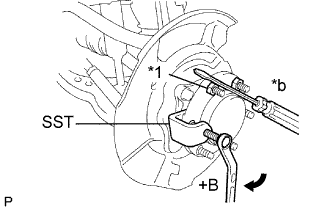
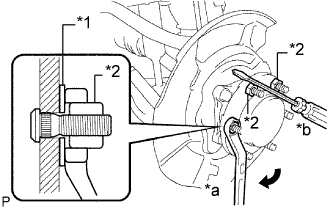

БОЛТ КРЕПЛЕНИЯ ПЕРЕДНЕГО КОЛЕСА К СТУПИЦЕ > ЗАМЕНА |
| 1. СНИМИТЕ ПЕРЕДНЕЕ КОЛЕСО |
| 2. СНИМИТЕ КОЛЕСНЫЙ ТОРМОЗНОЙ ЦИЛИНДР ЛЕВОГО ДИСКОВОГО ТОРМОЗА В СБОРЕ |
 |
С помощью разрезной головки отсоедините трубопровод тормозной системы от колесного тормозного цилиндра дискового тормоза в сборе.
 |
Выверните 2 болта и снимите колесный тормозной цилиндр дискового тормоза в сборе.
| 3. СНИМИТЕ ПЕРЕДНИЙ ДИСК |
 |
Если диск планируется использовать повторно, нанесите метки на диск и ступицу колеса.
| *1 | Метка |
Снимите передний диск.
| 4. ВЫВЕРНИТЕ БОЛТ КРЕПЛЕНИЯ ЛЕВОГО ПЕРЕДНЕГО КОЛЕСА К СТУПИЦЕ |
|  |
Зафиксировав ступицу колеса с помощью SST и отвертки или аналогичного инструмента, выверните болт крепления переднего колеса к ступице.
| *1 | Гайка |
| *a | Поверните |
| *b | Удерживайте |
| 5. ВВЕРНИТЕ БОЛТ КРЕПЛЕНИЯ ЛЕВОГО ПЕРЕДНЕГО КОЛЕСА К СТУПИЦЕ |
|  |
Вставьте новый болт крепления колеса к ступице.
Предварительно установите шайбу и гайку ступицы на болт крепления колеса к ступице, как показано на рисунке.
| *1 | Шайба |
| *2 | Гайка |
| *a | Поверните |
| *b | Удерживайте |
Удерживая ступицу отверткой или аналогичным инструментом, поверните гайку ступицы до вступления в контакт нижней поверхности головки болта крепления колеса к ступице и ступицы колеса.
Отверните гайку ступицы и снимите шайбу.
| 6. УСТАНОВИТЕ ПЕРЕДНИЙ ДИСК |
Совместите метки и установите передний диск.
| 7. УСТАНОВИТЕ КОЛЕСНЫЙ ТОРМОЗНОЙ ЦИЛИНДР ЛЕВОГО ДИСКОВОГО ТОРМОЗА В СБОРЕ |
Закрепите цилиндр дискового тормоза в сборе 2 болтами.
С помощью разрезной головки подсоедините трубопровод тормозной системы к колесному тормозному цилиндру дискового тормоза в сборе.
| 8. УСТАНОВИТЕ ПЕРЕДНЕЕ КОЛЕСО |